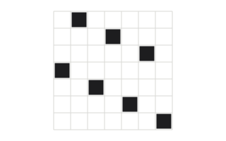
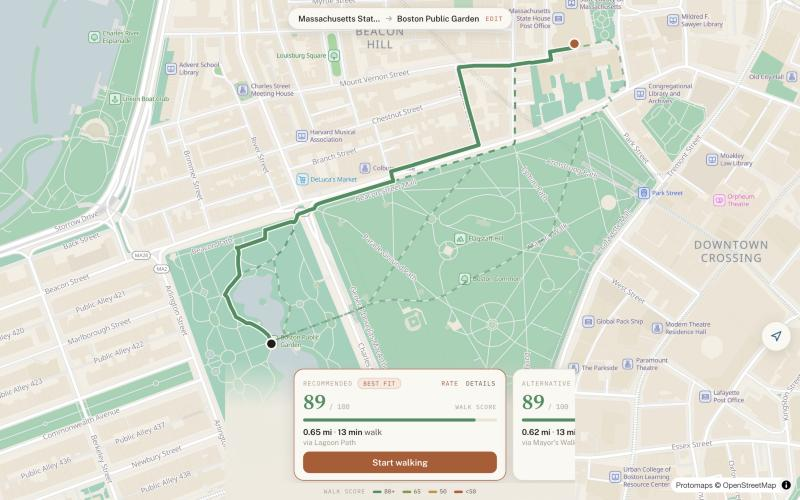

Jaeho Lee
I'm a first-year at MIT. In the past I worked on the affine group Aff(ℤn) and panmagic permutations. Now I'm mostly interested in mechanistic interpretability, starting with what small networks learn when you train them to multiply in a finite group.
This year I'm doing research in the Fiete Lab. Before MIT I wrote three papers with Sergiy Koshkin, listed below, and spent a summer at RSI working on quadratic residues and pseudorandomness. I was a Regeneron STS finalist in 2026.
I also like building things. One of them is HiveMusic, which turns a room of phones into one speaker.
News
- Paper with Sergiy Koshkin on the conjugacy classes and representations of Aff(ℤn) accepted to Integers.
- Built HiveMusic at HackMIT with Frank Lucci.
- Posted cosets vs irreps, a pre-registered study of 89 small networks on 7 finite groups.
- Started research in the Fiete Lab.
- Named a Regeneron Science Talent Search finalist.
Research
-
 The affine group of integers modulo n: conjugacy classes and representations
The affine group of integers modulo n: conjugacy classes and representationsWe describe the conjugacy classes and irreducible representations of Aff(ℤn) for every n. For an odd prime p, the affine permutation matrices span the same space as all p × p permutation matrices.
-
 Cosets vs irreps
Cosets vs irrepsIn 89 one-hidden-layer MLPs trained on 7 finite groups, neurons mostly organize by subgroup cosets, not by irreducible representations.
-

N-ary groups of panmagic permutations from the Post coset theoremThe Post covers of N-ary groups of panmagic permutations are subgroups of Aff(ℤn), namely the permutations that keep a panmagic permutation panmagic under multiplication.
Companion paper: Panmagic permutations and N-ary groups, PUMP Journal of Undergraduate Research 8 (2025), 195–212 · arXiv
Projects
-

HumanpathHumanpath finds walking routes and scores them block by block for sidewalk condition and safety. It's made for phones and currently supports Boston and Austin. A slider trades distance for a better walk, and one bad stretch pulls a route's score down instead of getting averaged away.
-